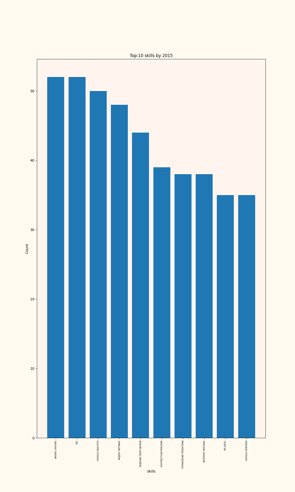
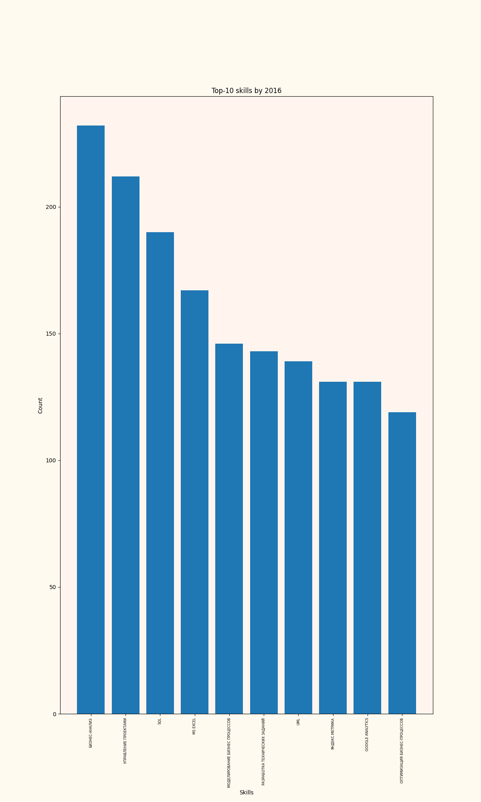
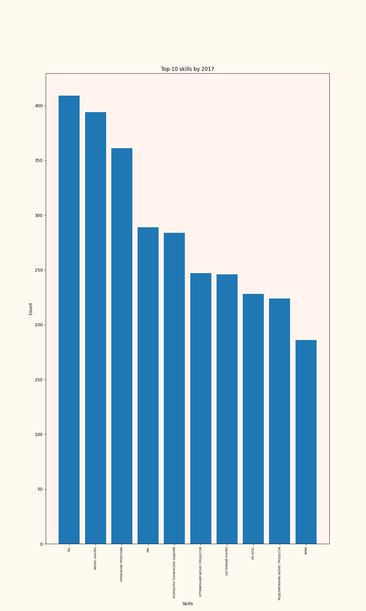
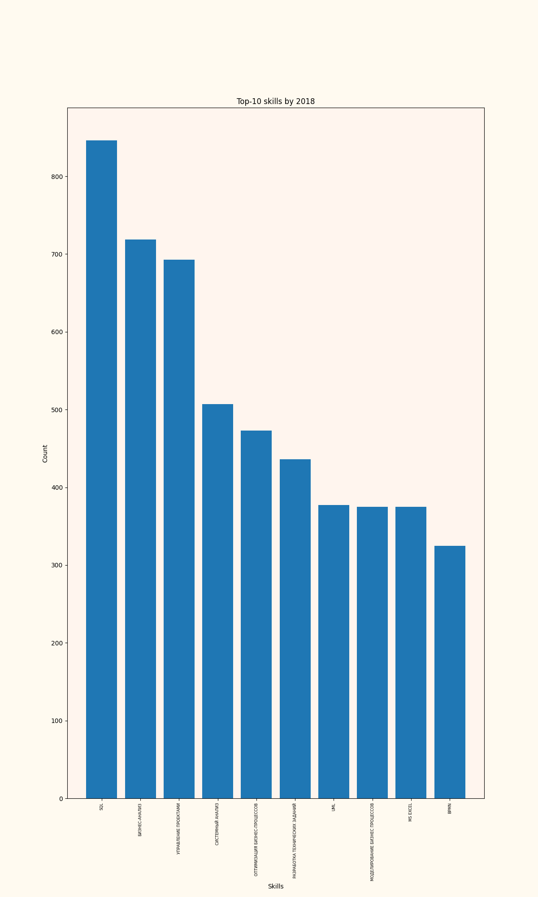
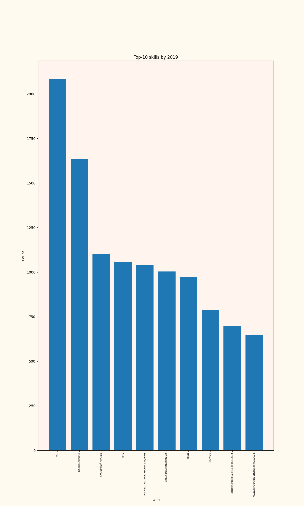
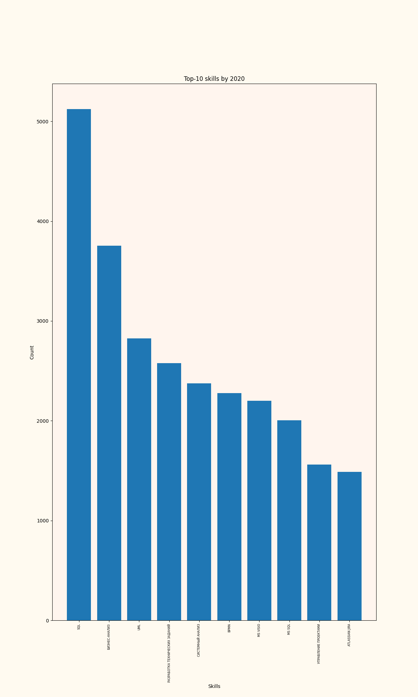
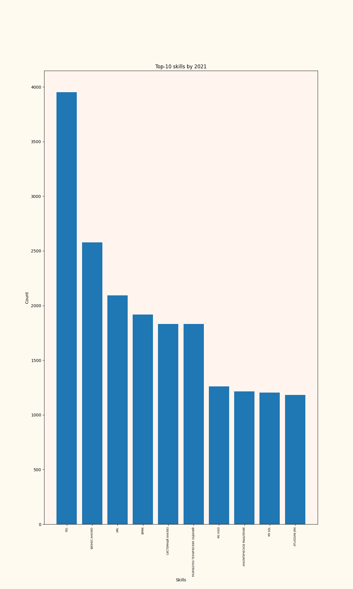
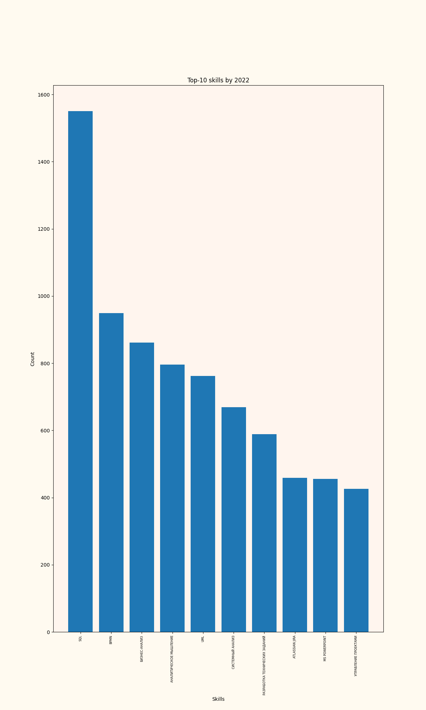

Топ-10 навыков по годам для профессии "Аналитик" за 2015 год

Топ-10 навыков по годам для профессии "Аналитик" за 2016 год

Топ-10 навыков по годам для профессии "Аналитик" за 2017 год

Топ-10 навыков по годам для профессии "Аналитик" за 2018 год

Топ-10 навыков по годам для профессии "Аналитик" за 2019 год

Топ-10 навыков по годам для профессии "Аналитик" за 2020 год

Топ-10 навыков по годам для профессии "Аналитик" за 2021 год

Топ-10 навыков по годам для профессии "Аналитик" за 2022 год
